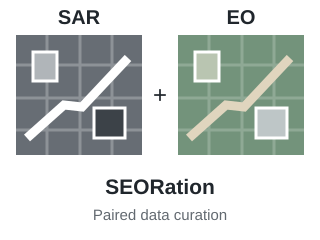
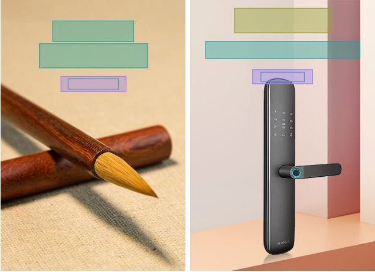
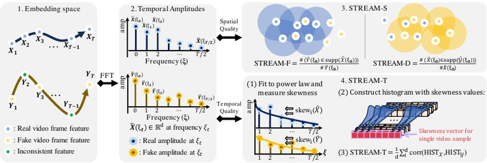

SEORation: Curating SAR-EO Paired Data for Multi-Modal Remote Sensing Foundation Models
Curating SAR-EO paired data for multimodal remote sensing foundation models.
김서준
I am a research engineer at SIA Co., Ltd., serving as technical research personnel for military service since February 2026.
I am currently on leave from the Ph.D. program at UNIST AIGS, where I work with Prof. Jaejun Yoo at LAIT. My research spans computer vision, generative models, and remote sensing.
Google Scholar: 95 citations · h-index 2 · i10-index 2

I am interested in remote sensing representation learning, image editing, content-aware layout generation, video generation evaluation, and efficient visual restoration.

Curating SAR-EO paired data for multimodal remote sensing foundation models.

Generating content-aware layouts through HTML representations and language-model design knowledge.

Evaluating the spatial and temporal quality of generated videos independently.
Working on remote sensing representation learning and multi-modal foundation model research.
Teaching assistant for UNIST-LG Electronics DX Intensive Course, Introduction of Generative Models.
Assisted production of the CV Recent Trends lecture led by Prof. Jaejun Yoo.


Built travel preference analysis and recommendation algorithms for smart tourism services.
Mar. 2025 - Present · Currently on leave · Laboratory of Advanced Imaging Technology
Mar. 2023 - Feb. 2025 · Laboratory of Advanced Imaging Technology
Mar. 2019 - Feb. 2023
Mar. 2016 - Feb. 2019
Studying representation learning for remote sensing foundation models, including SAR-EO paired data curation and multi-modal remote sensing data understanding.
Developed PosterLlama, a content-aware layout generation approach that reformats visual layouts as HTML and leverages language-model design knowledge.
Proposed STREAM to evaluate spatial and temporal aspects of generated videos independently and support model diagnosis beyond short fixed-length clips.
Studied layout-free scene-text generation and editing for diffusion models that struggle to render accurate synthetic text.
Explored strong lottery tickets inside super-resolution networks to identify efficient models for resource-constrained devices.
Investigated LoRA-based personalization for diffusion models to reduce catastrophic forgetting across sequential concept learning.
Participated in projects on action recognition, pet biometric recognition, gas leak segmentation, non-destructive signal restoration, and panoramic vessel vision.
Quantitative evaluation model for spatio-temporal aspects of video generation models.
STREAM: Spatio-TempoRal Evaluation and Analysis Metric for Video Generative Models.
M.S. scholarship, Ph.D. national scholarship, and selected overseas internship support.